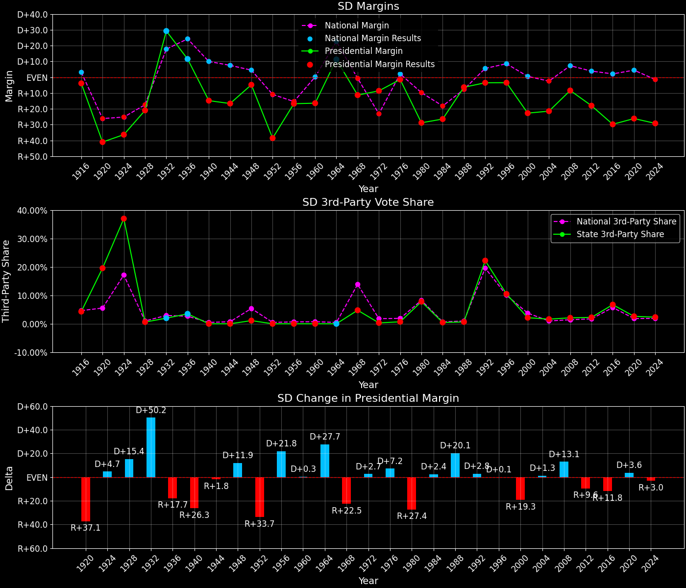
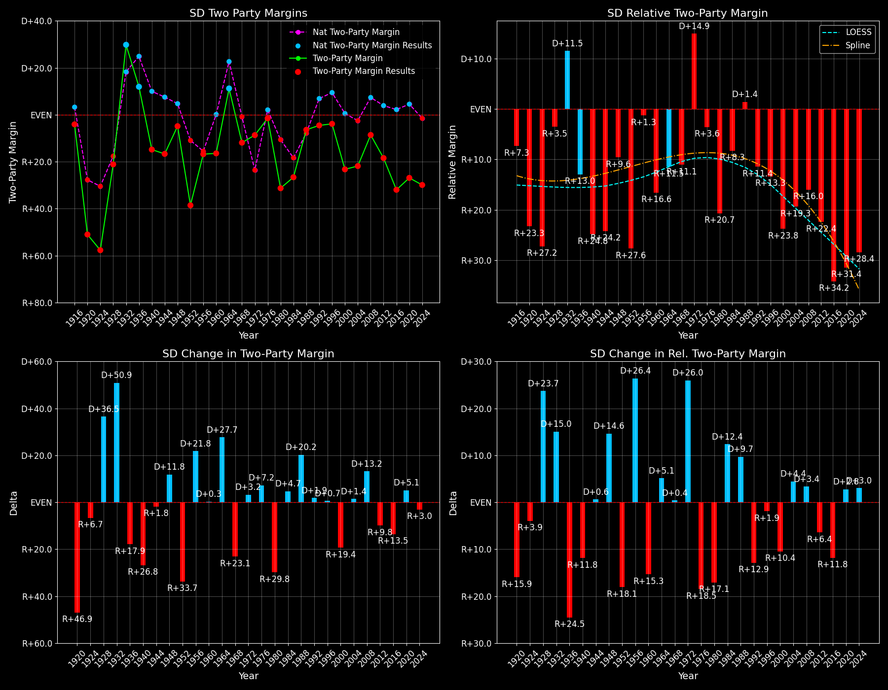

← Back to Map

Margins · 3rd-Party share · Pres. deltas
Relative margins · Relative 3rd-Party · Rel. deltas
South Dakota (SD) — Total Data
| Year | EVs | D | R | State Margin | Nat. Margin | Rel. Margin | Total votes |
|---|
| 1968 | 4 | 118,023(42.0%) | 149,841(53.3%) | R+11.3 | R+0.6 | R+10.7 | 281,264 |
| 1972 | 4 | 138,945(45.3%) | 166,476(54.3%) | R+9.0(Δ D+2.3) | R+23.5(Δ R+23.0) | D+14.6(Δ D+25.3) | 306,415 |
| 1976 | 4 | 147,068(48.9%) | 151,505(50.4%) | R+1.5(Δ D+7.5) | D+2.2(Δ D+25.7) | R+3.7(Δ R+18.2) | 300,678 |
| 1980 | 4 | 103,855(31.7%) | 198,343(60.5%) | R+28.8(Δ R+27.4) | R+9.9(Δ R+12.1) | R+18.9(Δ R+15.3) | 327,703 |
| 1984 | 3 | 116,113(36.5%) | 200,267(63.0%) | R+26.5(Δ D+2.4) | R+18.1(Δ R+8.2) | R+8.4(Δ D+10.6) | 317,867 |
| 1988 | 3 | 145,560(46.5%) | 165,415(52.8%) | R+6.3(Δ D+20.1) | R+7.7(Δ D+10.4) | D+1.4(Δ D+9.8) | 312,991 |
| 1992 | 3 | 124,888(37.1%) | 136,718(40.7%) | R+3.5(Δ D+2.8) | D+5.6(Δ D+13.3) | R+9.1(Δ R+10.5) | 336,254 |
| 1996 | 3 | 139,333(43.0%) | 150,543(46.5%) | R+3.5(Δ D+0.1) | D+8.6(Δ D+3.0) | R+12.0(Δ R+2.9) | 323,826 |
| 2000 | 3 | 118,804(37.6%) | 190,700(60.3%) | R+22.7(Δ R+19.3) | D+0.5(Δ R+8.0) | R+23.2(Δ R+11.2) | 316,269 |
| 2004 | 3 | 149,244(38.4%) | 232,584(59.9%) | R+21.5(Δ D+1.3) | R+2.5(Δ R+3.0) | R+19.0(Δ D+4.2) | 388,215 |
| 2008 | 3 | 170,924(44.7%) | 203,054(53.2%) | R+8.4(Δ D+13.1) | D+7.3(Δ D+9.7) | R+15.7(Δ D+3.3) | 381,975 |
| 2012 | 3 | 145,039(39.9%) | 210,610(57.9%) | R+18.0(Δ R+9.6) | D+3.9(Δ R+3.4) | R+21.9(Δ R+6.2) | 363,815 |
| 2016 | 3 | 117,458(31.7%) | 227,721(61.5%) | R+29.8(Δ R+11.8) | D+2.1(Δ R+1.8) | R+31.9(Δ R+10.0) | 370,093 |
| 2020 | 3 | 150,471(35.6%) | 261,043(61.8%) | R+26.2(Δ D+3.6) | D+4.4(Δ D+2.3) | R+30.6(Δ D+1.3) | 422,609 |
| 2024 | 3 | 146,859(34.2%) | 272,081(63.4%) | R+29.2(Δ R+3.0) | R+1.5(Δ R+6.0) | R+27.7(Δ D+3.0) | 428,922 |
Column explanations
- Δ
- Change (delta) in the value from the previous election year.
- Year
- Election year.
- EVs
- Number of electoral votes allocated to this state or unit.
- D
- Number of votes for the Democratic candidate (raw count(pct%)).
- R
- Number of votes for the Republican candidate (raw count(pct%)).
- State Margin
- Margin between the two major-party candidates, including third-party votes ((D - R)/total).
- Nat. Margin
- The national presidential margin for that year, including third-party votes ((D_total - R_total)/total_votes).
- Rel. Margin
- The presidential margin relative to the national presidential margin (Margin - Nat. Margin).
- Total votes
- Total voter turnout or ballots cast (when provided).
South Dakota (SD) — Third-Party Data
| Year | D | R | Other votes | State 3rd-Party Share | 3rd-Party Nat. Share | 3rd-Party Rel. Share |
|---|
| 1968 | 118,023(42.0%) | 149,841(53.3%) | 13,400(4.8%) | 4.76% | 13.59% | -8.82% |
| 1972 | 138,945(45.3%) | 166,476(54.3%) | 994(0.3%) | 0.32% | 0.09% | 0.23% |
| 1976 | 147,068(48.9%) | 151,505(50.4%) | 2,105(0.7%) | 0.70% | 0.33% | 0.37% |
| 1980 | 103,855(31.7%) | 198,343(60.5%) | 25,505(7.8%) | 7.78% | 6.98% | 0.81% |
| 1984 | 116,113(36.5%) | 200,267(63.0%) | 1,487(0.5%) | 0.47% | 0.12% | 0.35% |
| 1988 | 145,560(46.5%) | 165,415(52.8%) | 2,016(0.6%) | 0.64% | 0.21% | 0.43% |
| 1992 | 124,888(37.1%) | 136,718(40.7%) | 74,648(22.2%) | 22.20% | 19.23% | 2.97% |
| 1996 | 139,333(43.0%) | 150,543(46.5%) | 33,950(10.5%) | 10.48% | 9.68% | 0.80% |
| 2000 | 118,804(37.6%) | 190,700(60.3%) | 6,765(2.1%) | 2.14% | 3.65% | -1.51% |
| 2004 | 149,244(38.4%) | 232,584(59.9%) | 6,387(1.6%) | 1.65% | 0.84% | 0.81% |
| 2008 | 170,924(44.7%) | 203,054(53.2%) | 7,997(2.1%) | 2.09% | 1.38% | 0.72% |
| 2012 | 145,039(39.9%) | 210,610(57.9%) | 8,166(2.2%) | 2.24% | 1.62% | 0.62% |
| 2016 | 117,458(31.7%) | 227,721(61.5%) | 24,914(6.7%) | 6.73% | 5.54% | 1.20% |
| 2020 | 150,471(35.6%) | 261,043(61.8%) | 11,095(2.6%) | 2.63% | 1.84% | 0.78% |
| 2024 | 146,859(34.2%) | 272,081(63.4%) | 9,982(2.3%) | 2.33% | 1.88% | 0.45% |
Column explanations
- Year
- Election year.
- D
- Number of votes for the Democratic candidate (raw count(pct%)).
- R
- Number of votes for the Republican candidate (raw count(pct%)).
- Other votes
- Number of votes for third-party (other) candidates (raw count(pct%)).
- State 3rd-Party Share
- Share of the vote received by third-party (other) candidates.
- 3rd-Party Nat. Share
- The national third-party share for that year (3rd-Party votes / total votes).
- 3rd-Party Rel. Share
- Third-party share relative to the national third-party share (3rd-Party share - Nat. 3rd-Party share).

Two-party margins · relative · deltas
South Dakota (SD) — Two-Party Data
| Year | EVs | D | R | 2-Party Margin | 2-Party Nat. Margin | 2-Party Rel. Margin |
|---|
| 1968 | 4 | 118,023(44.1%) | 149,841(55.9%) | R+11.9 | R+0.7 | R+11.2 |
| 1972 | 4 | 138,945(45.5%) | 166,476(54.5%) | R+9.0(Δ D+2.9) | R+23.6(Δ R+22.9) | D+14.5(Δ D+25.7) |
| 1976 | 4 | 147,068(49.3%) | 151,505(50.7%) | R+1.5(Δ D+7.5) | D+2.2(Δ D+25.8) | R+3.7(Δ R+18.2) |
| 1980 | 4 | 103,855(34.4%) | 198,343(65.6%) | R+31.3(Δ R+29.8) | R+10.6(Δ R+12.8) | R+20.6(Δ R+16.9) |
| 1984 | 3 | 116,113(36.7%) | 200,267(63.3%) | R+26.6(Δ D+4.7) | R+18.1(Δ R+7.5) | R+8.5(Δ D+12.2) |
| 1988 | 3 | 145,560(46.8%) | 165,415(53.2%) | R+6.4(Δ D+20.2) | R+7.8(Δ D+10.4) | D+1.4(Δ D+9.8) |
| 1992 | 3 | 124,888(47.7%) | 136,718(52.3%) | R+4.5(Δ D+1.9) | D+6.9(Δ D+14.7) | R+11.4(Δ R+12.8) |
| 1996 | 3 | 139,333(48.1%) | 150,543(51.9%) | R+3.9(Δ D+0.7) | D+9.5(Δ D+2.6) | R+13.3(Δ R+1.9) |
| 2000 | 3 | 118,804(38.4%) | 190,700(61.6%) | R+23.2(Δ R+19.4) | D+0.5(Δ R+8.9) | R+23.8(Δ R+10.4) |
| 2004 | 3 | 149,244(39.1%) | 232,584(60.9%) | R+21.8(Δ D+1.4) | R+2.5(Δ R+3.0) | R+19.3(Δ D+4.4) |
| 2008 | 3 | 170,924(45.7%) | 203,054(54.3%) | R+8.6(Δ D+13.2) | D+7.4(Δ D+9.8) | R+16.0(Δ D+3.4) |
| 2012 | 3 | 145,039(40.8%) | 210,610(59.2%) | R+18.4(Δ R+9.8) | D+3.9(Δ R+3.4) | R+22.4(Δ R+6.4) |
| 2016 | 3 | 117,458(34.0%) | 227,721(66.0%) | R+31.9(Δ R+13.5) | D+2.2(Δ R+1.7) | R+34.2(Δ R+11.8) |
| 2020 | 3 | 150,471(36.6%) | 261,043(63.4%) | R+26.9(Δ D+5.1) | D+4.5(Δ D+2.3) | R+31.4(Δ D+2.8) |
| 2024 | 3 | 146,859(35.1%) | 272,081(64.9%) | R+29.9(Δ R+3.0) | R+1.6(Δ R+6.1) | R+28.3(Δ D+3.1) |
Column explanations
- Δ
- Change (delta) in the value from the previous election year.
- Year
- Election year.
- EVs
- Number of electoral votes allocated to this state or unit.
- D
- Number of votes for the Democratic candidate (raw count(pct%)).
- R
- Number of votes for the Republican candidate (raw count(pct%)).
- 2-Party Margin
- Margin between the two major-party candidates, ignoring third-party votes ((D - R)/(D + R)).
- 2-Party Nat. Margin
- The national presidential margin for that year, including third-party votes ((D_total - R_total)/total_votes).
- 2-Party Rel. Margin
- The presidential margin relative to the national presidential margin (Margin - Nat. Margin).